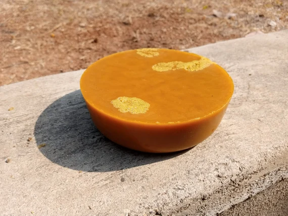

Nuestra miel de abeja es recolectada a mano de colmenas locales y procesada naturalmente sin calor, lo que preserva sus propiedades nutricionales y su sabor único.
$40.000
Pollen de Abeja
Nuestro polen de abeja es recolectado a mano de colmenas locales y seco al sol, lo que garantiza su frescura y calidad.
$80.000
Cera de Abeja

Nuestra cera de abeja es recolectada a mano de colmenas locales y purificada naturalmente, lo que la hace perfecta para usar en velas, cosméticos y más.